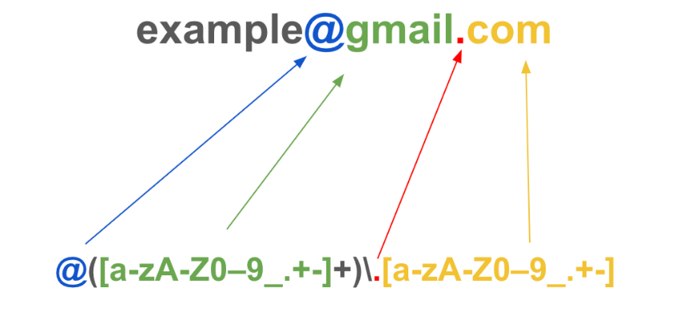
El patrón de un mail, parte por parte
Publican el primer modelo matemático de una neurona.
Lo que queda: se puede describir con matemática cómo un sistema toma entradas y produce respuestas. De esa idea salen, con los años, los autómatas.
Define los eventos regulares: una forma de describir el comportamiento de un sistema sin enumerar todos los casos posibles.
Le alcanza con dos operaciones: | (alternativa) y * (repetición).
En Bell Labs necesitaba buscar patrones en archivos enormes, y hacerlo a mano era un infierno.
Lleva los eventos regulares de Kleene a un programa real: nacen las expresiones regulares — regular expressions, o regex.

Antes de meternos con la sintaxis: ¿dónde se les ocurre que aparece esto en el día a día de alguien que programa?
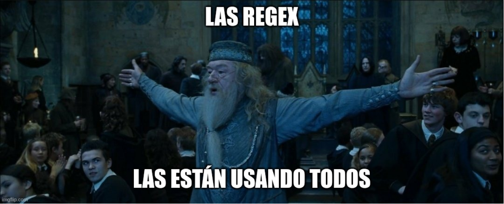
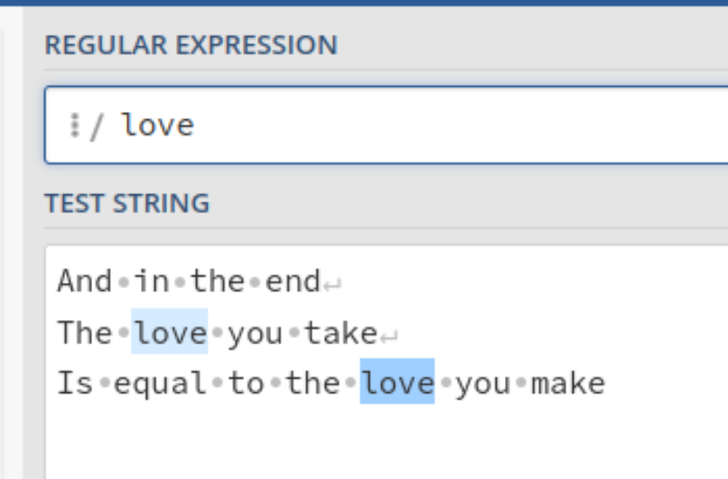
Sin símbolos especiales, la regex es texto literal: /love/ busca exactamente love.
Para probar todo lo que sigue: regex101.com
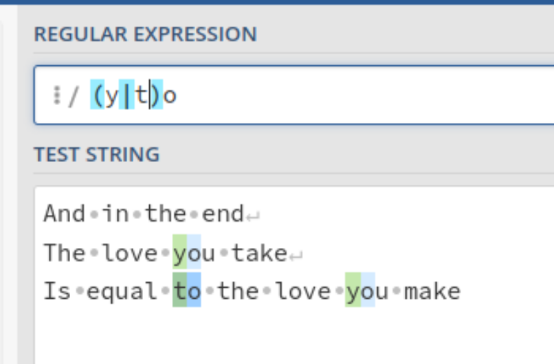
| — esto o lo otro.
(y|t)o matchea yo, to
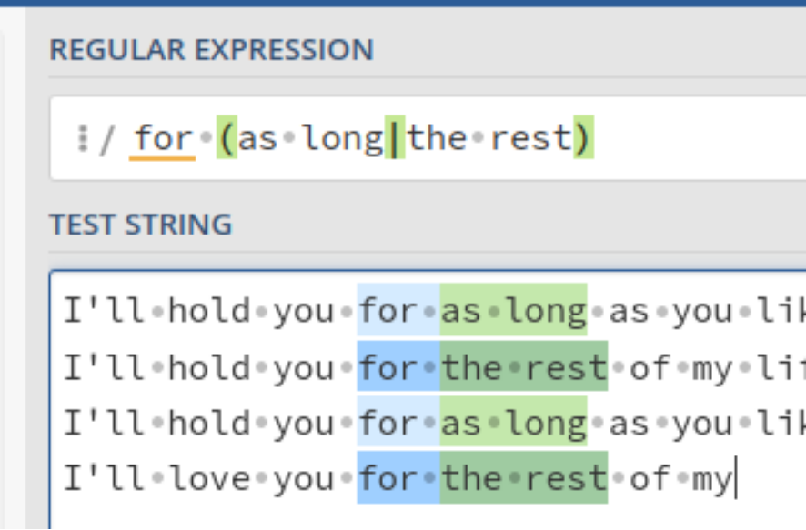
( ) — agrupan lo de adentro como una sola unidad.
Así el | elige entre frases enteras, no entre letras sueltas: for (as long|the rest)
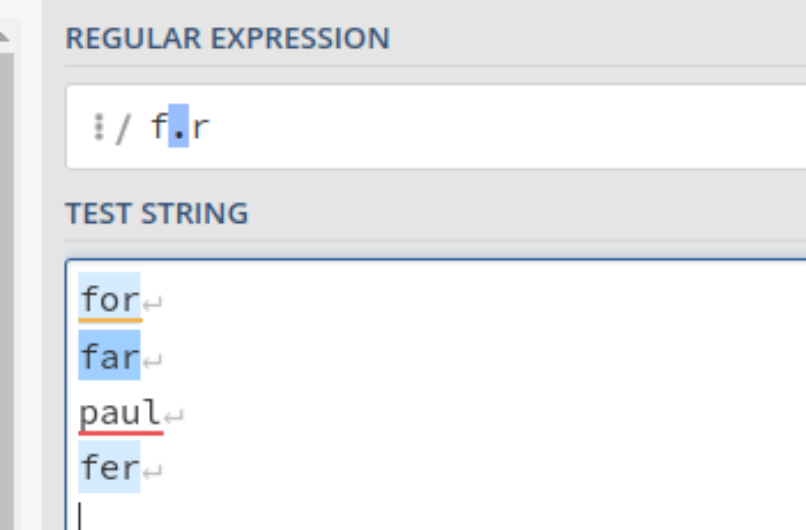
. — cualquier carácter, uno solo.
f.r matchea far, fer no paul
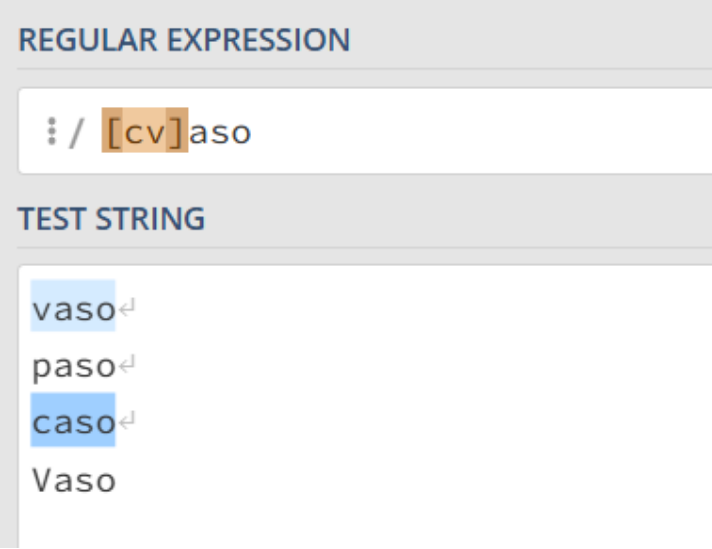
[ ] — un carácter de un conjunto.
[cv]aso matchea vaso, caso no paso, Vaso
[cv]aso — una c o una v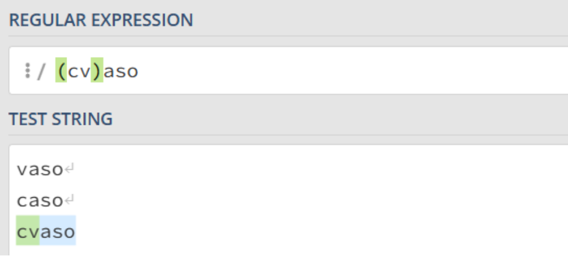
(cv)aso — la secuencia literal cv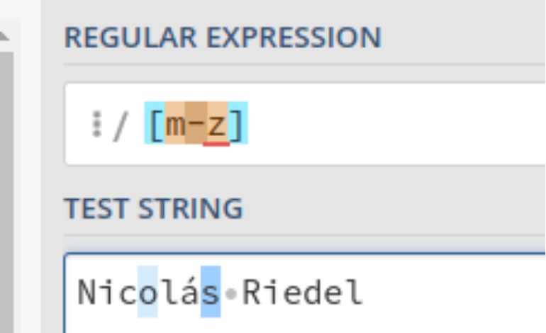
[m-z] — el rango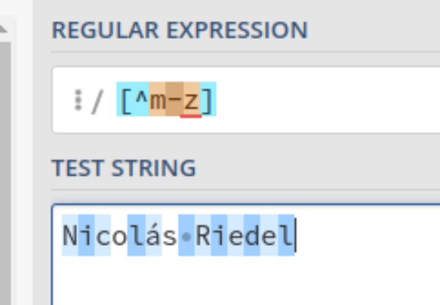
[^m-z] — el rango negado. — cualquier carácter\n — carácter de nueva línea\t — carácter de tabulación\s — cualquier carácter de espacio en blanco (incluye \t, \n y otros)\S — cualquier carácter que no sea un espacio en blanco\w — cualquier carácter de palabra (letras del alfabeto latino, 0-9 y _)\W — cualquier carácter que NO sea de palabra (el inverso de \w)\b — límite de palabra: la frontera entre \w y \W\B — no-límite de palabra: el inverso de \b^ dentro de colección — niega el contenido, complemento^ fuera de colección — el inicio de una línea$ — el final de una línea\ — el carácter literal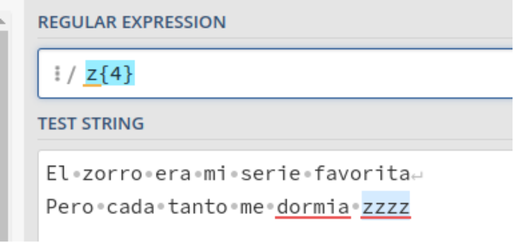
{n} — exactamente n repeticiones.
z{4} matchea zzzz
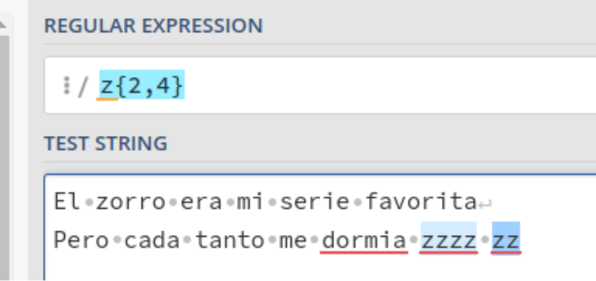
{min,max} — entre min y max repeticiones.
z{2,4} matchea zz, zzz, zzzz
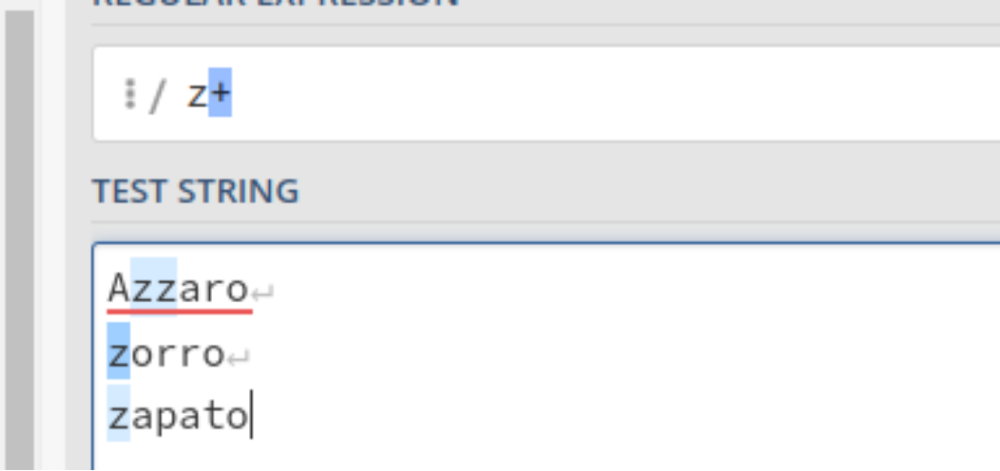
Los tres atajos que más se usan:
* 0 o más + 1 o más ? 0 o 1
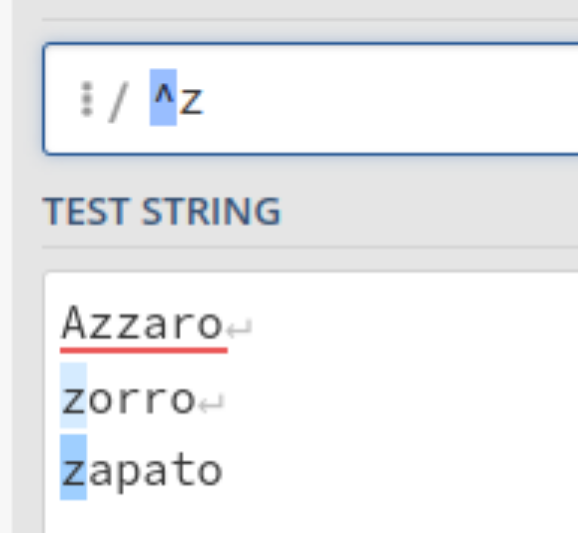
^ — inicio de línea $ — fin de línea.
Sin anclas, el patrón puede matchear en cualquier parte.
Permite buscar patrones dentro de los archivos especificados. El patron es una regex: todo lo que vimos hasta acá se puede usar acá adentro.
grep [opciones] [patron] [archivo]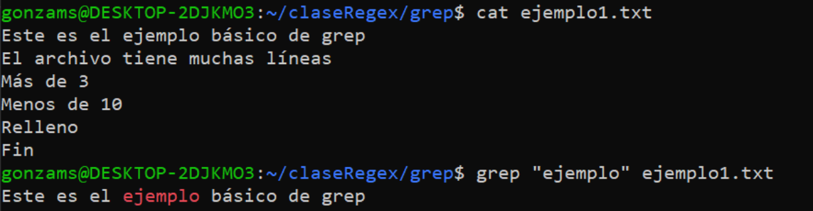
grep "ejemplo" ejemplo1.txt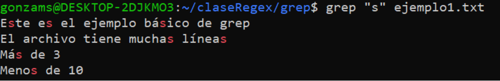
grep "s" ejemplo1.txtgrep "ejemplo" ejemplo1.txtgrep "s" ejemplo1.txt-i — ignora el case-n — muestra el número de línea-w — coincide solo con palabras completas, no con subcadenas-v — muestra todas las líneas que NO contienen el patrónTip-r — busca el patrón en todos los archivos del directorio y sus subdirectorios-c — muestra el número de líneas que contienen el patrón-l — muestra solo los nombres de los archivos que contienen el patrón, no las líneas coincidentesgrep "ejemplo" archivo1.txt archivo2.txt archivo3.csv
grep "ejemplo" *
grep "ejemplo" *.log
grep "ejemplo" ruta/a/directorio/*
grep -r "ejemplo" .
grep -r "ejemplo" ./ruta/a/directorio/Buscar las notas de Gonza dentro del archivo notas.csv.
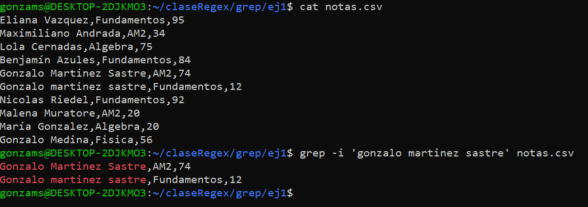
Buscar las notas de Gonza en todos los archivos dentro del directorio ej1.
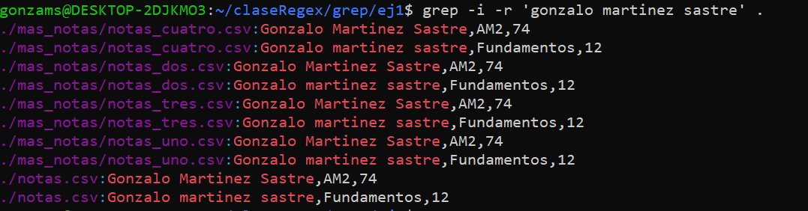
Dado el archivo notas.csv, buscar todos aquellos alumnos cuyas notas son mayores o iguales a 85.
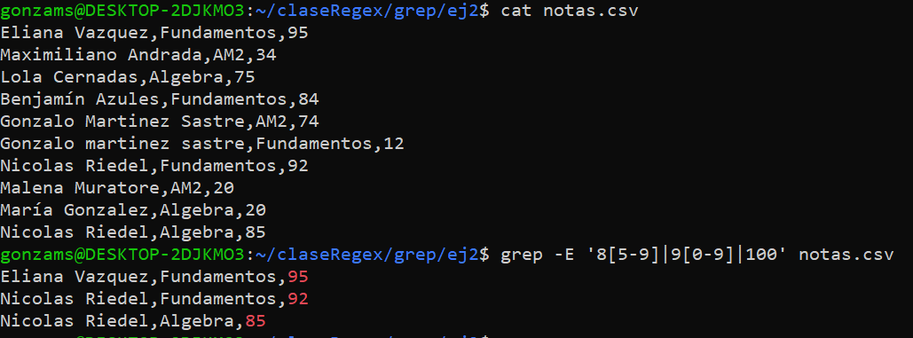
Dado el listado de alumnos, buscar todos aquellos cuyo código postal no esté bien escrito de acuerdo con el CPA (1 letra, 4 números, 3 letras).
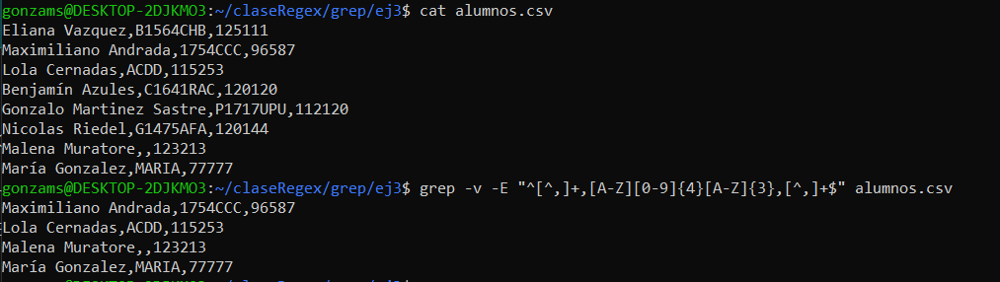
Dado el listado de alumnos, buscar todos aquellos que tengan entre 25 y 29 años (inclusive).
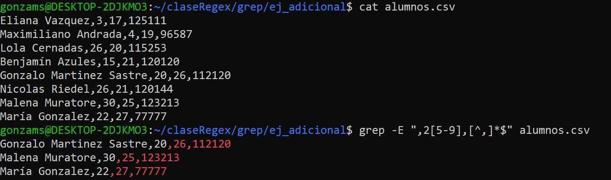